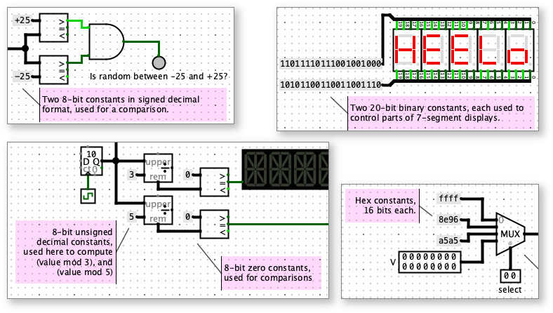

Found in Wiring Library

Use a constant when a circuit calls for a fixed, known value. You can specifify a value for each constants in binary, hex, or decimal, and the constant will hold that value during the circuit simulation.
Constants can be unintuitive at first. But if you are familiar with programming, think of constants in Logisim circuits as playing a similar role as "literal values" like 6 and 12 in a statement like y = 12 + x*6. They are fixed values, not inputs (like x) or outputs (like y).
It's a common mistake to use an Input Pin when a constant would be better. An Input Pin takes on different values, depending on user interaction, and it resets to zero when the simulation is reset. The value of an Input Pin is not saved with a project, but instead resets to zero whenever a project is opened again. By contrast, a Constant has a fixed value that does not change during a simulation and is saved with project file.
Similarly, here are some other common mistakes, and how to fix them:
Mistake: Using an Input Pin, with a label nearby saying "Don't touch this input, it must be zero or the circuit won't work."
Fix: Use a constant with value 0.
Mistake: Using an Input Pin and expecting it to be zero at all times, and hoping the user never pokes the input.
Fix: Use a constant with value 0.
Mistake: Using an Input Pin, with a label nearby saying "Before simulating this circuit, please put hex value 4c in this input, otherwise the circuit won't work."
Fix: Use a constant with hex value 4c. Or use whatever number base is most convenient.
Mistake: Cleverly using 1-bit Input Pin, wired to both inputs of a XOR gate, followed by a NOT gate, knowing that anything XOR'ed with itself will result in a 0, so the NOT gate will always output 1.
Fix: Use a 1-bit constant with value 1.
Mistake: Using a 1-bit constant 0, followed by a NOT gate, to obtain the value 1.
Fix: Use a 1-bit constant with value 1.
Mistake: Using the power or ground
components from the Analog Library with components
expecting digital or boolean inputs.
Fix: Use constants instead. Although the power and ground components work
identically to constant 1 and constant 0, they have more limited options, and
they are intended for use with other Analog Library components or places where
defined voltage devel is needed for "power", rather than a digital or Boolean
true/false value.
Each constant has a single port, which constantly carries the specified value.
None - constants do not respond to being poked.
Supports VHDL and Verilog synthesis.